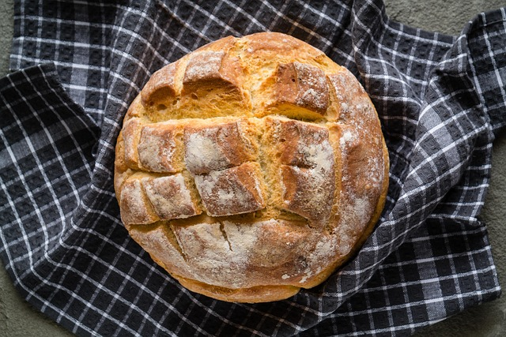
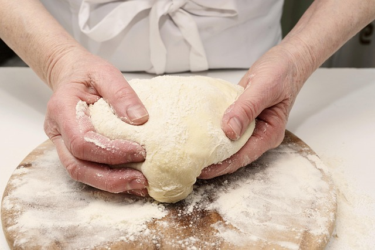

French Country Loaf

Ingredients (1 loaf)
- 450g Cake flour
- 30g Granulated sugar
- 15g Salt
- 7g Instant dry yeast
- 250g Water

Instructions
- Put the flour, sugar, salt, and yeast in a bowl.
- Add the water.
- Mix until soft, smooth and elastic.
- Prove in a bowl covered in plastic until double in size.
- Weigh, shape and place on greased tray and dust with flour.
- Cover and prove until double in size.
- Dust again and score with sharp blade.
- Bake for 20-30mins at 220°C until dark brown.
Resorces